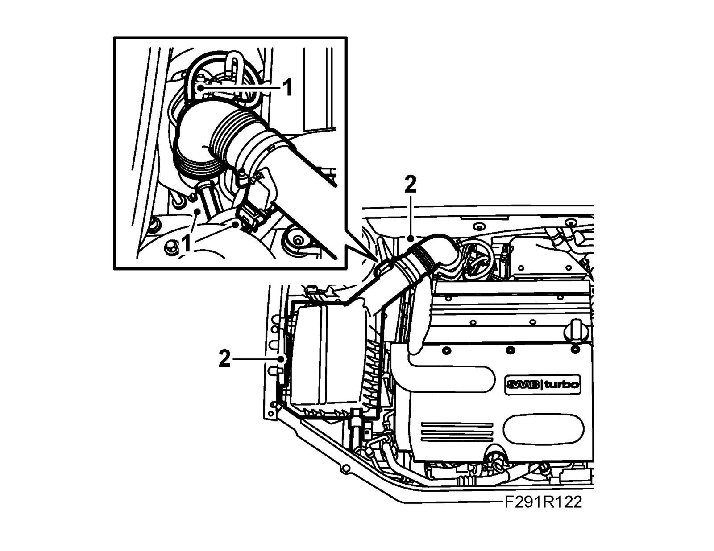
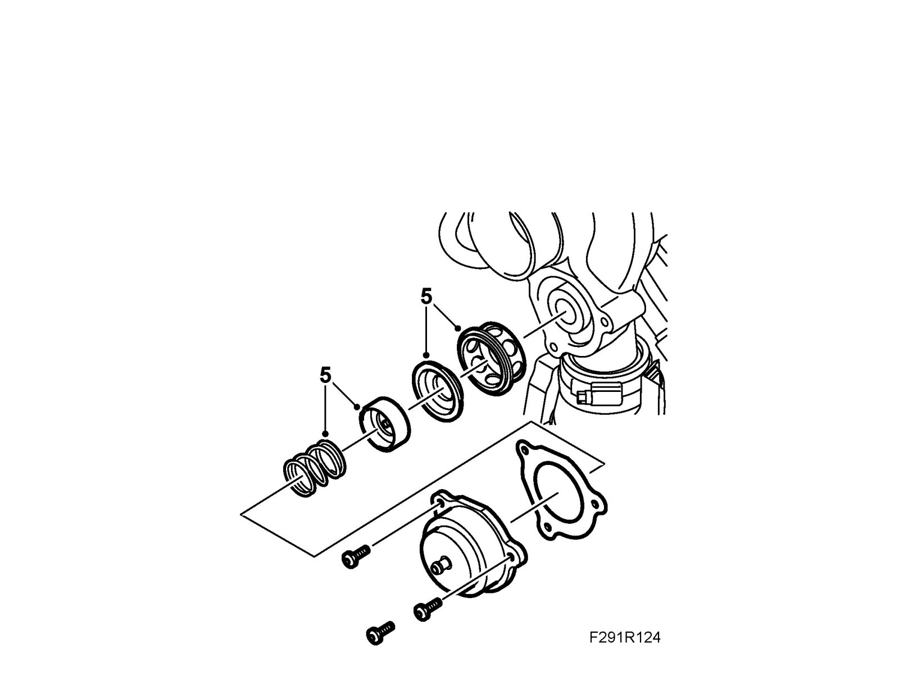
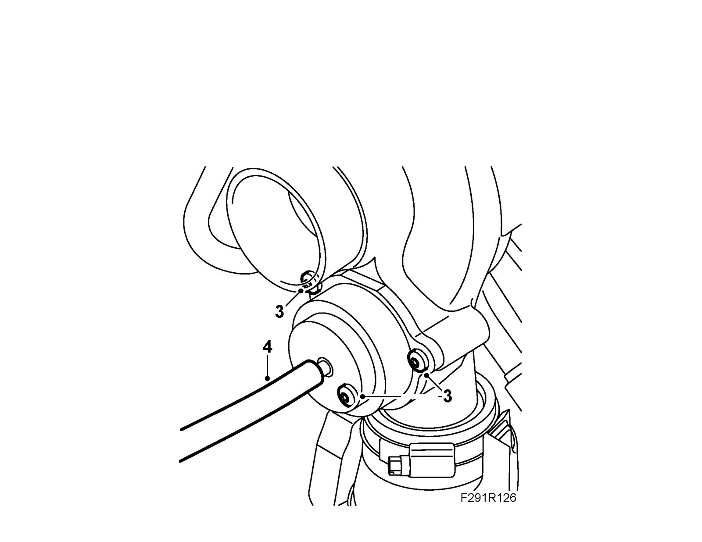
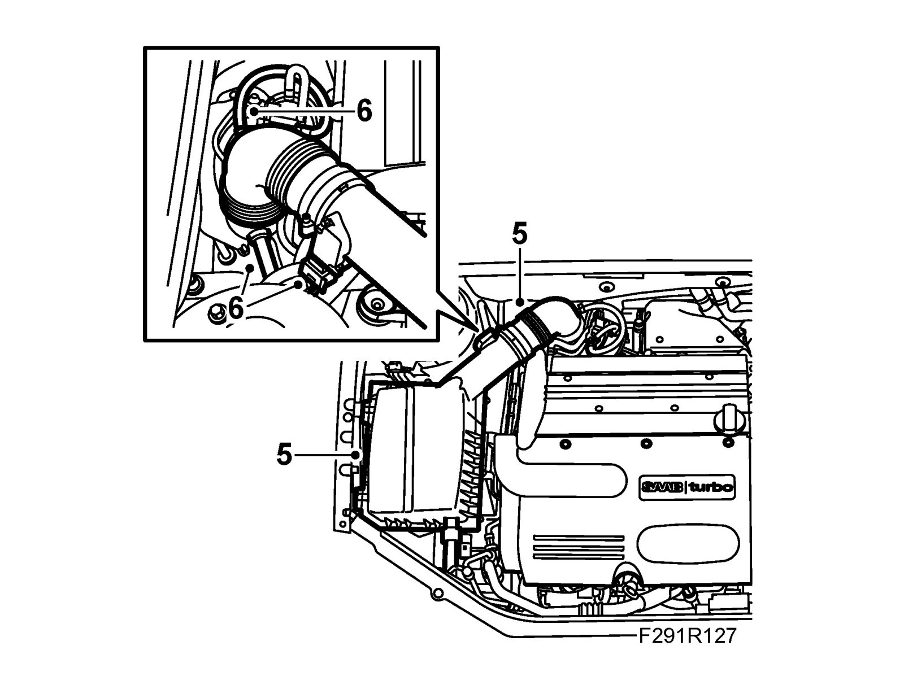

Air Bypass Valve: Service and Repair
Bypass valve diaphragm, B207E/LImportant
Always use wing covers when working in the engine bay.
To remove
1. Remove the mass air flow sensor connector and the hoses.

2. Remove the air cleaner casing cover and the intake hose to the turbo.
3. Remove the hose from the turbo bypass valve.
4. Unscrew the valve's cover, holding the cover firmly when the bolts are removed.
5. Lift the cover away and replace the parts.

To fit
1. Clean the cover and the turbo from gasket residue.
2. Fit the diaphragm kit as illustrated.
3. Fit the cover to the turbo. Use the new bolts and the new gasket. Apply a thin layer of non-acidic Vaseline to the cover to retain the gasket.
Tightening torque 8 Nm (6 lbf ft).

4. Fit the hose to the turbo's bypass valve.
5. Fit the air cleaner casing cover and the intake hose to the turbo.

6. Fit the mass air flow sensor connector and the hoses.
7. Check the bypass valve.
8. Remove the wing cover.